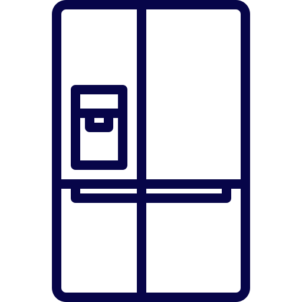
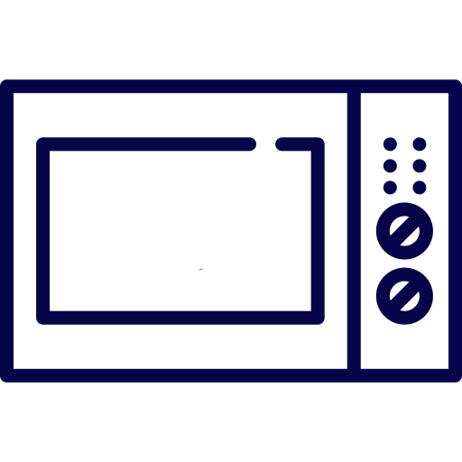
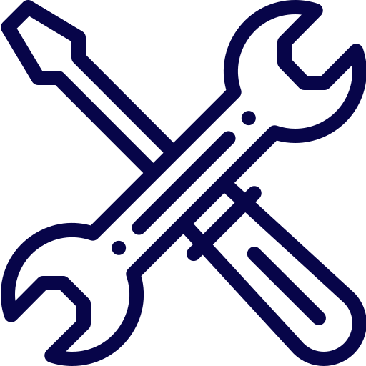

Refrigerators/Freezers/Coolers
At our company, we offer a wide range of services to help you keep your
groceries fresh, from simple repairs to sophisticated diagnostics. Our
team of technicians is professionally trained to handle nearly every
make and model of refrigerators, freezers, and coolers, ensuring that
your repairs are done correctly the first time around. You can trust us
to provide reliable and efficient solutions to all your refrigeration
needs, so you can get back to enjoying fresh and delicious food. Contact
us today to schedule a service appointment.

Ovens/Ranges/Hoods
Our company offers comprehensive repair services for all makes and
models of ovens, ranges, cooktops, and ventilation hoods. Our team of
factory-trained technicians is dedicated to providing you with an honest
estimate and high-quality repair work that meets your needs and budget.
Whether you need a simple repair or a more complex diagnosis, we have
the expertise and experience to get the job done right the first time
around. Contact us today to schedule a service appointment and let us
help you keep your kitchen running smoothly.

Washers/Dryers
At our company, we understand that a broken washer or dryer can be a
major inconvenience. That's why we offer fast and reliable repair
services for all makes and models of washers and dryers. Our team of
experienced technicians is committed to providing you with an honest
estimate and timely repair work that meets your needs and budget.
Whether you need a quick fix or a more in-depth diagnosis, we have the
expertise and tools to get your appliance up and running again. Contact
us today to schedule a service appointment and let us help you get back
to your daily routine.

Microwaves/Microwave Ovens
When your microwave or toaster breaks down, it can throw your whole
routine off track. That's where our team at Universal Appliance comes
in. We offer fast and reliable repair services for all makes and models
of microwaves, toasters, and microwave ovens. Our experienced
technicians have the skills and tools to diagnose and repair any issue
you may be facing. From simple fixes to more complex repairs, we'll work
with you to find a solution that fits your needs and budget. Contact us
today to schedule a service appointment and let us help you get your
kitchen back in working order.

Dishwashers/Garbage Disposals
When your dishwasher or garbage disposal stops working, it can be a real
headache. That's why at Universal Appliance, we offer fast and reliable
repair services for all makes and models of dishwashers and garbage
disposals. Our team of experienced technicians is equipped to handle any
issue you may be facing, from clogs and leaks to electrical problems and
more. We understand the importance of having a functioning kitchen, and
we're committed to getting your appliances up and running again as
quickly as possible. Contact us today to schedule a service appointment
and let us help you get back to your daily routine.

Maintenance and Cleaning
At Universal Appliance, we understand that regular maintenance and
cleaning are essential to keeping your appliances running smoothly and
efficiently. That's why when we show up to service an appliance our
experienced technicians will clean the appliance as needed, helping to
prolong the lifespan of your appliances and prevent costly repairs down
the line. From cleaning coils and filters to checking electrical
connections and more, we'll help keep your appliances in top condition.
To prevent possible future issues a good cleaning should be done every 3
- 6 months.

Need Parts Not Service?
At Universal Appliance, we pride ourselves on offering top-quality
repair services for all makes and models of appliances. But did you know
that we also sell parts? That's right - we're not just a repair shop,
we're also a one-stop shop for all your appliance needs.
At Universal Appliance, we prioritize sourcing all of our parts directly
from authorized vendors or our own personal inventory. This careful
selection process ensures that you receive the highest-quality
components for your appliances. We are dedicated to delivering the best
service possible, which is why we never compromise on the authenticity
and functionality of the parts we offer. Whether you're a DIY enthusiast
or just need a replacement part for your appliance, we're here to help.
Simply call us or email our parts department at uasparts1@gmail.com and
our knowledgeable staff will help you find the part you need.
At Universal Appliance, we're committed to providing top-quality service
and support for all your appliance needs. Whether you need repairs,
parts, or just some friendly advice, we're here to help. Contact us
today to see how we can assist you.